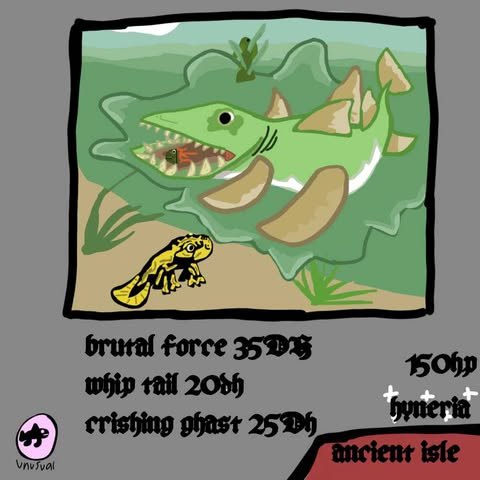

: FishCards
Home
Hyneria

The Hyneria is an Unusual fish, obtainable
in Ancient Isle. Due to its low rarity, it makes for
an easy catch, moving slow and steady across the
fishing bar.When hooked, a will pop above the player's
head, and a bell sound is played - as with all Unusual fish.
This fish can also swim on water, and walk on land.
Attacks
Brutal Force
Slightly cracks the bones.
It deals 35 damage.
Whip tail
Tail that feels like a whip.
It deals 20 damage.
Crishing Ghast
They jump out of the water
and uses their body weight to crush
the opponent's fish. This attack deals
25 damage.